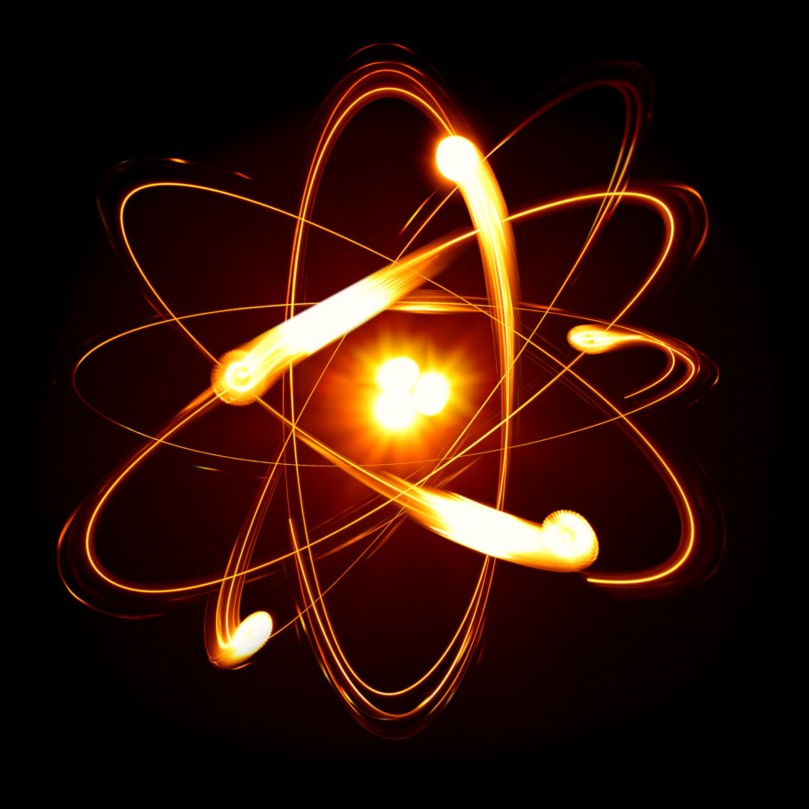

A tecnologia quântica é um novo campo da física e da engenharia, que dá a algumas das estranhas características da
mecânica quântica, especialmente o entrelaçamento quântico e mais recentemente o tunelamento quântico aplicações
práticas como a computação quântica, a criptografia quântica, a simulação quântica, a metrologia quântica, o sensor
quântico, e a imagem quântica.

O campo da tecnologia quântica foi descrito pela primeira vez em 1997 em um livro de Gerard J. Milburn,[1], que se
seguiu então de um artigo publicado em 2003 por Jonathan P. Dowling e Gerard J. Milburn,[2][3] o termo apareceu também
em outro artigo publicado no mesmo ano por David Deutsch.[4] O campo da tecnologia quântica tem se beneficiado
enormemente das ideias advindas do campo da informática quântica, particularmente a computação quântica. Diferentes
áreas da física quântica, tal como a ótica quântica, a ótica atômica, a eletrônica quântica e os dispositivos quânticos
não-mecânicos foram unificadas na busca do computador quântico e por tabela da teoria da informação quântica.